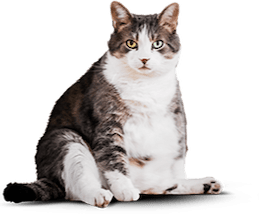

Cat Energy – интернет магазин, который поможет подобрать и заказать подходящую систему питания для Вашего кота.
Функциональное питание для котов
Занялся собой? Займись котом!
Как это работает
Живой пример
Борис сбросил 5 кг за 2 месяца, просто заменив свой обычный корм на Cat Energy Slim. Отличный результат без изнуряющих тренировок! При этом он не менял своих привычек и по-прежнему спит по 16 часов в день.
Затраты на питание:
15 000 РУБ.
Как кот Борис поменялся благодаря нашему питанию.
